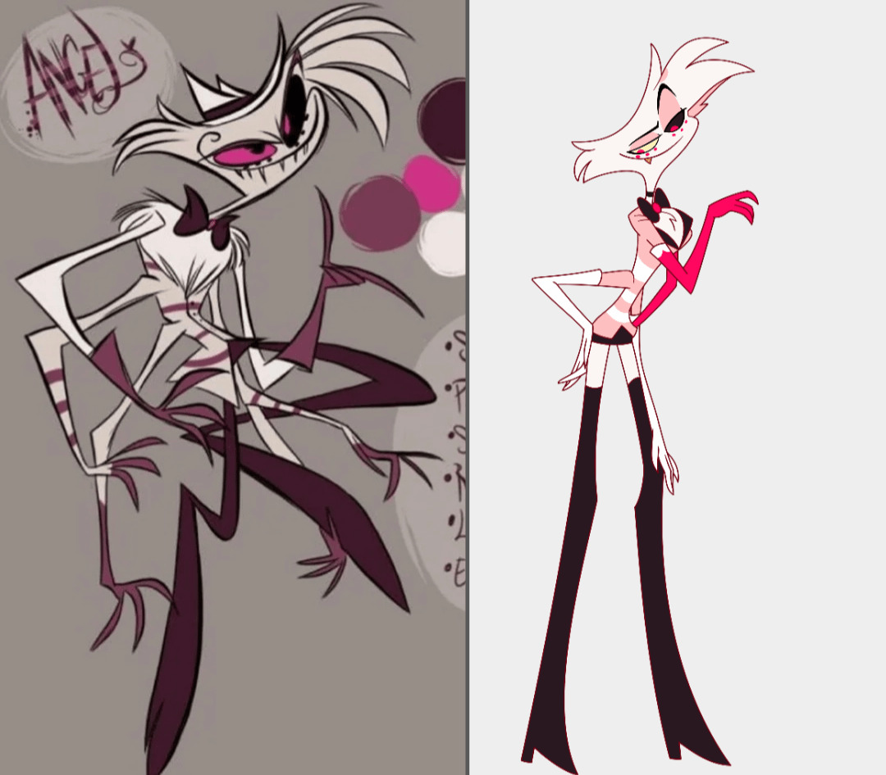

Angel Dust (Adult Film Star)
설명
Angel Dust는 Hazbin Hotel 프로젝트에 처음으로 참여한 지옥의 죄인입니다. 그는 과거 포르노 배우였으며 마약과 범죄에 깊이 연루된 인물로, 화려하고 도발적인 성격을 지녔습니다.
겉으로는 가볍고 유쾌한 농담을 일삼지만, 내면에는 외로움과 상처가 깊게 자리 잡고 있어, 그의 인간적인 면모가 종종 드러나기도 합니다.
Charlie의 구원 프로젝트에 자발적으로 참여하면서 조금씩 변화하려는 모습을 보입니다.
디자인 정보
파일럿 버전
- Viziepop이 초기에 그린 디자인이며 심플하고 코믹스러운 느낌이 있습니다.
- 주요 특징: 전체적으로 부드러운 색감과 가벼운 코믹스체
공식 애니메이션 디자인
- 정식 시리즈에 사용된 디자인은 디테일에 신경을 쓴 점이 잘 보이며 캐릭터의 개성이 잘 드러납니다.
- 주요 변경점: 선명한 채도, 헤어 스타일과 유니폼